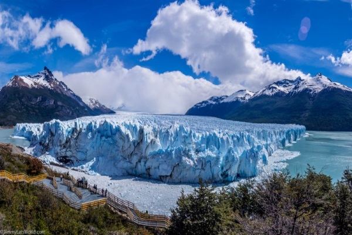
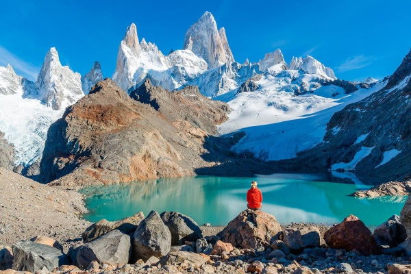
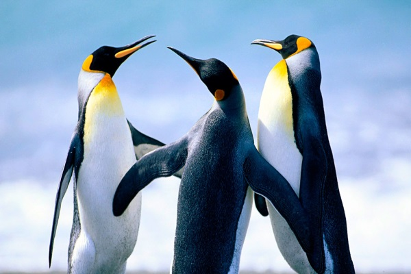

Conheça as belezas da Patagônia

Ushuaia
Considerada "o fim do mundo", Ushuaia é a cidade mais ao sul do planeta. Dona de mistérios e belezas de deixar qualquer um de queixo caído

Glaciar Perito Moreno
Um dos parques nacionais mais bonitos e visitados no continente americano, o Glaciar Perito Moreno brinda os visitantes com uma excelente estrutura.

Monte Fitz Roy
Trilhas deslumbrantes e paisagens surpreendentes e surreais aguardam os visitantes neste passeio pela "Porta da Terra do Fogo" Patagônica, um lugar encantador e misterioso.

Fauna Patagônica
Baleias dos mais diversos tipos, aves migratórias de todas as partes do mundo, cavalos selvagens, leões e lobos marinhos. Descubra a rica fauna Patagônica.